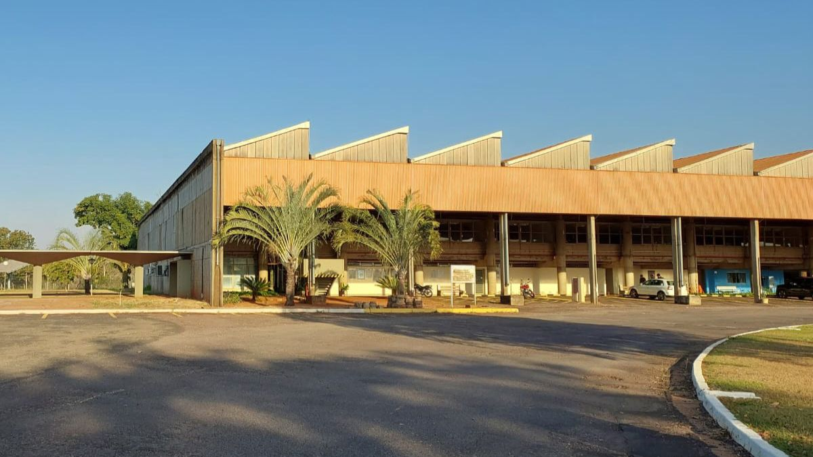

A expansão do ensino tecnológico: Fatec consolida presença em Ilha Solteira
A chegada da Faculdade de Tecnologia de São Paulo (Fatec) em Ilha Solteira representa um marco para a educação na região noroeste paulista. Instalada no Campus III, a instituição surge como uma peça fundamental para o desenvolvimento econômico local, oferecendo cursos superiores gratuitos e de alta empregabilidade, focados nas demandas do mercado de trabalho moderno.
Parceria estratégica com a Unesp
Um dos grandes diferenciais desta unidade é a sua localização privilegiada. A Fatec de Ilha Solteira opera em estreita colaboração com a infraestrutura já consolidada da Unesp, permitindo um intercâmbio de conhecimento e tecnologia. Essa união fortalece o ecossistema acadêmico, garantindo que os estudantes tenham acesso a laboratórios de ponta e um ambiente de aprendizado vibrante.
Foco em Desenvolvimento de Software
Destaca-se o curso de Desenvolvimento de Software Multiplataforma, que prepara profissionais para atuar em diversas frentes da tecnologia da informação. Através desta parceria com a Unesp e o suporte do Centro Paula Souza, os alunos são capacitados para resolver problemas complexos e criar soluções inovadoras que impactam diretamente a sociedade digital.